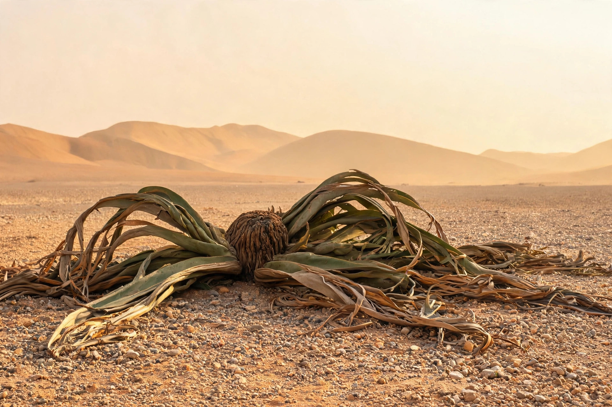

| Kingdom | Plantae |
|---|---|
| Division | Gnetophyta |
| Order | Welwitschiales |
| Family | Welwitschiaceae |
| Genus | Welwitschia Hook.f. |
| Species | W. mirabilis |
Welwitschia is a monotypic genus of gymnosperm, the only genus in the family Welwitschiaceae, containing the single species Welwitschia mirabilis. It is endemic to the Namib Desert of Namibia and southern Angola and is regarded as a living fossil, the sole survivor of its order.
The plant is remarkable in that throughout its life it produces only two true leaves. From a short, thick, woody stem the two strap-shaped leaves grow continuously from basal meristems, becoming long, torn and ribbon-like as wind and sand split them over the centuries, so that an old plant appears to have many leaves. The species is dioecious, with separate male and female plants bearing cone-like reproductive structures. A deep taproot and an extensive shallow root system collect water from fog and infrequent rain.
Welwitschia is exceptionally long-lived: radiocarbon dating suggests many large individuals are 500–1,000 years old, and the largest are estimated at up to around 2,000 years. It grows in isolated populations across the Namib, typically inland of the coastal fog belt. In Afrikaans it is known as tweeblaarkanniedood — "two-leaves-cannot-die".
The plant was brought to scientific attention in 1859 by the Austrian botanist and explorer Friedrich Welwitsch, after whom Joseph Dalton Hooker named the genus; the Nama name is ǂkharos or kharos, and in Damara it is called onyanga ("desert onion"), the cones having been eaten by local people. Welwitschia appears on the coat of arms of Namibia. It is listed in CITES Appendix II, and while not considered immediately threatened, its populations are vulnerable to fungal infection, off-road driving and climate change.